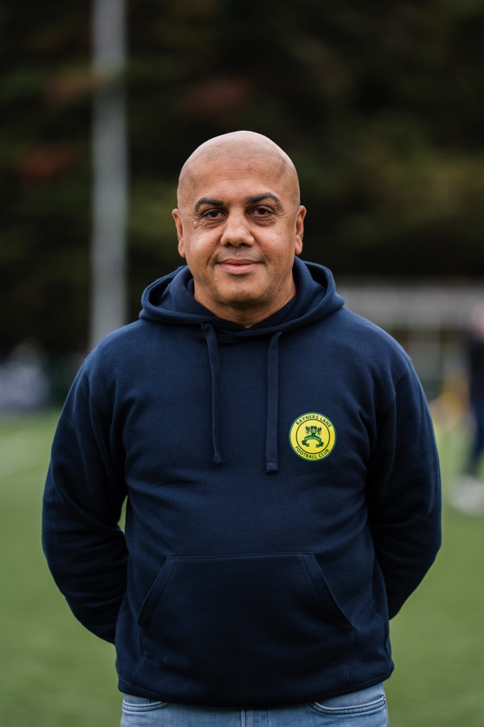
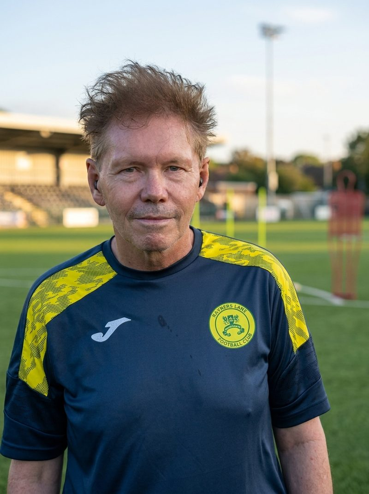
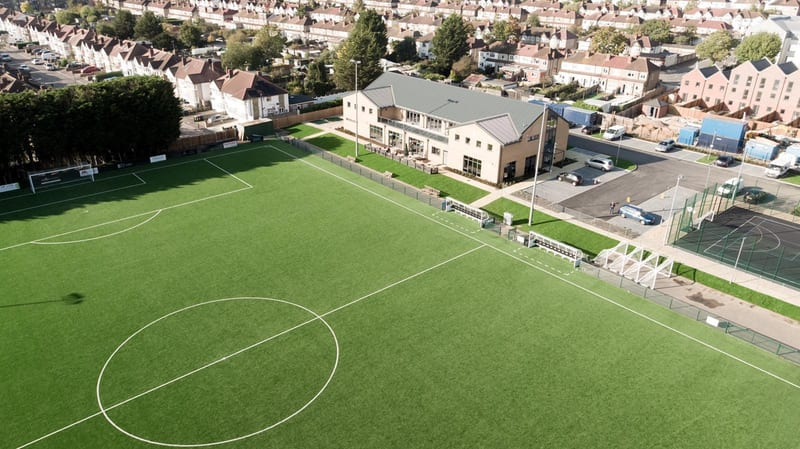

The Club
Harrow’s club since 1933. Operated by Rayners Lane Football Club Limited · Company No. 17110511.
Harrow’s club since 1933. Operated by Rayners Lane Football Club Limited · Company No. 17110511.
Rayners Lane FC isn’t trying to be anything it’s not. We’re a community football club built by Harrow, for Harrow — and that’s something to be proud of.
Founded in 1933, The Lane has played their football at Tithe Farm Social Club for over nine decades. Yellow isn’t just a colour — they’re identity. They’re the Tube station at the end of the Piccadilly line, the terraces of HA2, the old school Middlesex football that doesn’t make the back pages but matters to the people who show up every week.
Rayners Lane Football Club is a community football club, operated by Rayners Lane Football Club Limited (Company No. 17110511) and playing at Tithe Farm Sports & Social Club. Affiliated to Middlesex County FA and The FA. FA Charter Standard Community Club status reflects the work being done behind the scenes to build something sustainable.
New manager Gary Pitt. New era. Same club. The Lane is back in the Combined Counties Premier Division North for 2026-27 — and they mean business.

“What defines The Lane isn’t our league position. It’s the people who show up every single week, the community we represent, and the belief that this club is heading somewhere. Yellow kit. Harrow heart. We don’t stop.”
Under new manager Gary Pitt, with fresh investment and a clear direction, Rayners Lane FC enter the 2026-27 Combined Counties Premier Division North campaign with genuine ambition. The league allocation is confirmed. The commercial guide is out. Summer trials are open.
This is not a club looking backwards. This is Rayners Lane FC looking forward — and meaning it.
First Team Manager · Appointed 2026 · CCL Premier Division North
Gary Pitt takes the reins at Tithe Farm for the 2026-27 season. A new voice, a new structure, a squad being built from the ground up through summer trials. The Lane doesn’t do things half-heartedly — and neither does their new gaffer.


Tithe Farm Social Club · 151 Rayners Lane, Harrow, Middlesex HA2 0XH. Come early, stay late — the bar is open to supporters on match day.
Rayners Lane station (Piccadilly & Metropolitan lines) is a 12-minute walk. Exit the station and head south on Rayners Lane. Turn right onto Tithe Farm Road.
Routes H13 and 398 stop nearby. Alight at Rayners Lane station stop.
Postcode: HA2 0XH. Street parking available on Tithe Farm Road and surrounding streets.
Rayners Lane Football Club is a community football club operated by Rayners Lane Football Club Limited (Company No. 17110511), playing at Tithe Farm Sports & Social Club — a proper community setup, not just a football club with a bar bolted on.

Cash or card on the gate. Bar open from 1:30pm for home league fixtures. Free digital matchday programme available to Fan Zone members for eligible home fixtures.
Enquiries: info@raynerslanefc.co.uk
As an FA Charter Standard Community Club, The Lane is proud to back inclusive, disability-friendly fitness in our community. You-Nique Training welcomes all abilities — beginners, disability-friendly programmes, 1-to-1 and small-group coaching.
You-Nique Training · Amar Rai, Certified Personal Trainer & Gym Instructor (Level 3)
An independent community partner of Rayners Lane FC.